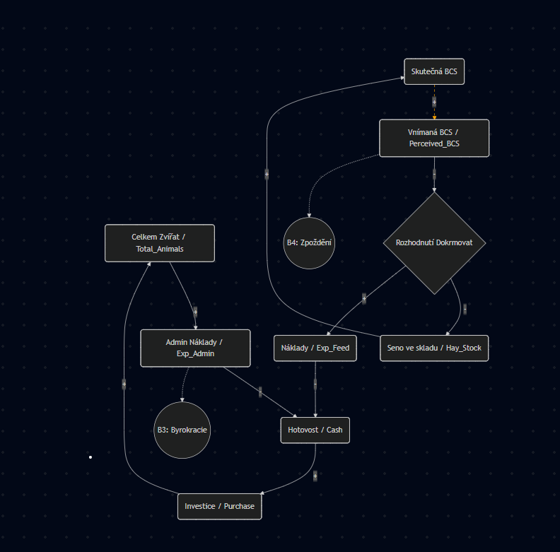
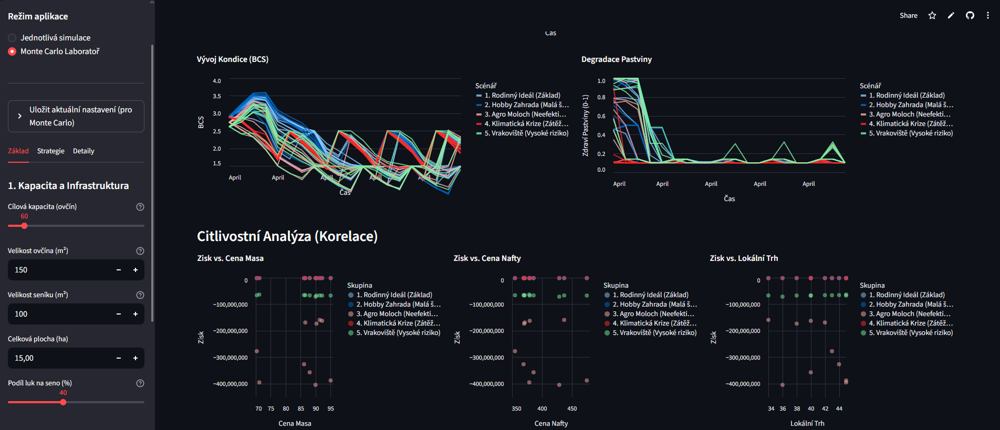

The Challenge: Farming isn't just about feeding animals; it's a complex system of delayed feedbacks, biological constraints, and volatile market prices. This project translates real-world agricultural logic into a Business Intelligence & Simulation tool.
The core philosophy was to bridge the gap between Reality and Data Science. It combines System Modeling with Financial Planning to create a digital twin of the farm, allowing for risk-free testing of strategies before investing capital.
The project began in the field. I conducted in-depth interviews with a local sheep farmer to understand the "Physics" of the business. We discussed what is relevant to the model and what is unnecessarily complex.
Together, we mapped out the Causal Loop Diagram (CLD) to capture the system's structure, identifying critical feedback loops (e.g., Pasture Degradation) and delays (e.g., Gestation) that traditional Excel planning misses.
Based on the CLD, I built a robust Python simulation engine utilizing System Dynamics principles. Every variable in the model is stochastic with a normal distribution to simulate real-world variance. All data points and functions were fact-checked against academic sources and the farmer's experience.
income - total_out. Accumulates profit/loss over time.harvest + buy - fed - sold. Physical inventory tracking.keep - cull - deaths. Population dynamics of breeding females.perceived_bcs < 3.2.demand_kg / available_grass. Determines pasture degradation.base * (animals/50)^factor.The backend is powerful, but the frontend makes it usable. I developed a comprehensive Streamlit BI Dashboard that serves as a "Flight Simulator" for the farm. It goes beyond simple charts, offering a deep dive into the farm's operational and financial health.
Key features of the dashboard include:
A single simulation isn't enough to manage risk. I implemented a Monte Carlo Laboratory that brings a true Data Science approach to the project.
This module runs the simulation thousands of times with randomized weather patterns and price volatilities. It generates probability distributions for outcomes like Bankruptcy Risk or Net Profit and includes Sensitivity Analysis to identify which variables (e.g., Fuel Price vs. Meat Price) have the highest correlation with success.
This project is the culmination of my skills in System Modeling, Business Intelligence, Data Visulalisation and sneak peak of Data Science . It demonstrates that I can not only build complex mathematical models but also translate them into user-friendly tools that answer critical business questions. It bridges the gap between theoretical econometrics and practical financial planning.